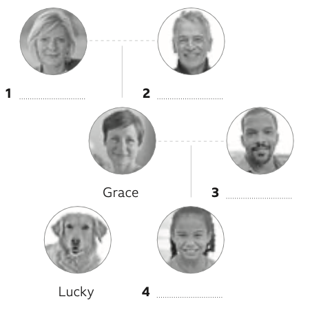
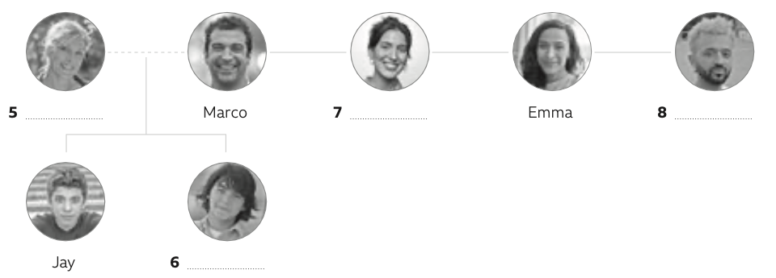

UNIT 1 · A2 WORKBOOK
The First Unit
Two lessons. One place to practise.
Заполните задания самостоятельно. После проверки вы увидите подсказки на русском и сможете попробовать ещё раз.
Make suggestions
Feelings · time phrases · listening · speaking
Vocabulary · adjectives for feelings
Complete the sentences with the adjectives from the box.
- Can I have some water? I’m really .
- Greg isn’t at work today. He’s at the doctor’s because he’s .
- I’m sorry I’m late. Please don’t be !
- I’m . Let’s do something interesting.
- I feel – not happy, not sad. Just normal.
- I want to go to bed. I’m very .
- What time is dinner? I’m really !
- I always feel after a hot bath.
Vocabulary · time phrases
Choose the correct answer to complete the sentences.
- I get up 5 a.m. every day.
- Do we have a class week?
- Let’s play tennis tomorrow.
- I teach German Tuesdays.
- I have an English class Thursday morning.
- What shall we do evening?
Vocabulary · time phrases
Complete the messages with one word in each gap. If no word is necessary, write (–).
How to … · make suggestions
Listen to the conversation. Answer the questions with Mike (M) or Fran (F).
- Who feels hungry?
- Who has a class at twelve?
- Who asks to meet at the café on East Street?
- Who loves the café?
- Who asks to meet at two?
How to … · make suggestions
Listen to the recording. Write what you hear. You will hear the sentences only once.
Pronunciation · intonation to show interest
Listen to the phrases. Do the people sound interested (I) or not interested (N)?
- Sure!
- Good idea.
- I’d love to!
- Perfect!
- Sure, that’s fine.
- OK.
Speaking practice
Listen and repeat the interested phrases.
Устная практика: повторите вслух и сравните себя с записью.
Speaking · make suggestions
Complete the conversation with the words in the box. Then listen and check.
A: Hi!
B: Hello, how are ¹ ?
A: I’m bored. How about you?
B: I’m all right. ² you like to have dinner?
A: Good idea. How about meeting at 5 o’clock?
B: Sorry, I ³ . What about 6.30?
A: Sure. Can we meet at the restaurant?
B: ⁴ .
A: Perfect! See you then.
B: See you then. ⁵ .
Speaking practice
You are B in the conversation in Ex 5A. Listen and speak after the beep. Record the conversation if you can.
Устная практика: повторите вслух и сравните себя с записью.
Speaking · self-check
Listen to your recording and compare it with the model in Ex 5A.
Ваша запись находится выше, в 5B. Сравните слова, паузы и интонацию. Запись голоса доступна до закрытия страницы; её можно скачать.
Talk about family
Possessive ’s and s’ · listening · family trees
Grammar · possessives: ’s, s’
The sentences below have a mistake. Choose the best option to correct the mistake.
- My brothers’ name is Harry.
- This isn’t my room. It’s the childrens’.
- Where are the keys of Anna?
- Mia’s Tim sister.
Grammar · possessives and contractions
Complete the conversation with seven apostrophes (four for possession and three for contractions).
A: that in the photo?
B: my sister and her family. Her Charlotte. Her name is Andy, and they’re both teachers.
A: Do they have children?
B: They have a daughter. Their name is Emily. They also have a dog. Their name is Buster.
A: Do you live near your parents?
B: Yes, we all do. My house is in the street next to us, so we all live quite near.
Добавьте апострофы в выделенных словах. Уже напечатанное they’re менять не нужно.
Listening · talk about family
Listen to Grace and Marco talk about their families. Complete the table.
| Grace | Marco | |
|---|---|---|
| From: | ||
| Lives in: | ||
| Job: |
Listening · family tree
Listen again. Complete the gaps in the family tree (1–8) with the names in the box.

